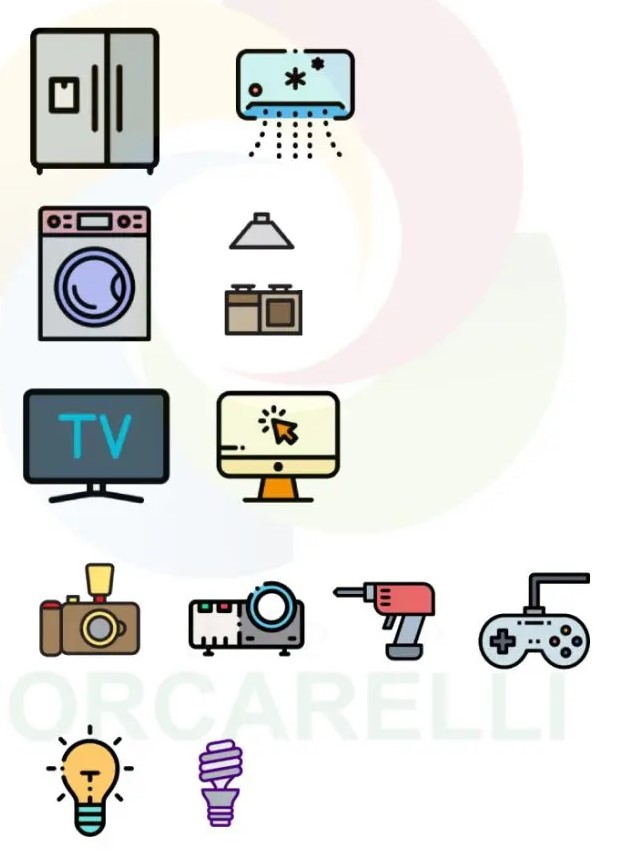

Definizione di RAEE?
I rifiuti RAEE sono i "Rifiuti da Apparecchiature Elettriche ed Elettroniche". Questa categoria di rifiuti comprende tutti quei dispositivi elettrici o elettronici che sono giunti al termine della loro vita utile o che non sono più utilizzati, come vecchi computer, televisori, telefoni cellulari, elettrodomestici, lampade, apparecchiature audio/video e così via.
Questi rifiuti contengono sostanze pericolose come il mercurio, il cadmio e il piombo, che possono causare danni all'ambiente e alla salute umana se non vengono gestiti correttamente.

Tipi di rifiuti RAEE
- Large Household Appliances: elettrodomestici come frigoriferi, lavatrici e asciugatrici
- Small Household Appliances: elettrodomestici come macchinette per il caffe, tostapane e frullatore
I rifiuti RAEE possono essere classificati in diverse categorie:
- Computer e componenti
- Telefoni, cellulari e accessori
- TV e apparecchi audiovisivi
- Apparecchi di illuminazione
- Elettrodomestici
- Apparecchi elettrici per la casa
Alcuni esempi di rifiuti RAEE sono:

Classificazione dei rifiuti RAEE
- R1: Questa categoria ospita tutti gli strumenti che mantengono il freddo o regolano la temperatura, come frigoriferi, congelatori e sistemi di climatizzazione.
- R2: Questa categoria si riferisce agli elettrodomestici di grandi dimensioni, noti anche come "Grandi Bianchi", quali lavatrici, lavastoviglie e forni a microonde.
- R3: Questa categoria include dispositivi televisivi e monitor, apparecchi radiotelevisivi, smartphone e tablet con schermi luminosi o LCD.
- R4: Questa categoria comprende una vasta gamma di apparecchiature, dai Piccoli Elettrodomestici (PED) all'Elettronica di Consumo (CE), strumenti, giocattoli, aspirapolvere, computer e stampanti.
- R5: Questa categoria è riservata alle fonti luminose, come neon, lampade a risparmio energetico e lampade a vapori di mercurio, sodio e ioduri.
I rifiuti RAEE sono classificati in diverse categorie in base alla loro tipologia e alla loro pericolosità per l'ambiente e la salute umana. Le principali categorie di RAEE includono: